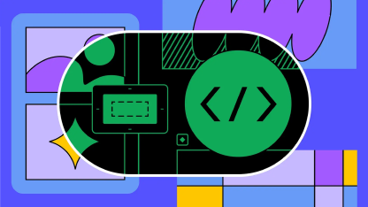
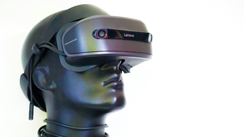

-
2024/02/10
UI/UX 新知Vision Pro 登場！Vision Pro UI/UX 設計重點大公開 (上)
Vision Pro 終於在 2024 年 2 月正式開賣，距離正式發表的 2023 年 6 月，已有半年時間。
Vision Pro 終於在 2024 年 2 月正式開賣，距離正式發表的 2023 年 6 月，已有半年時間。 這半年間，各種質疑聲不斷冒出，例如「太貴了，這是做給投資家看的產品，不能真的大量生產」、「續航力明顯不足，電池太重，不利於隨身攜帶使用」、「隔絕現實世界，會更加深世代或人際關係的隔閡」。
-

2023/11/20
UI/UX 新知給設計師和工程師的 Figma-Dev Mode 開發模式使用指南 (下)
延續上一篇針對 Dev Mode 介紹 這一篇要說的就是最複雜的「右側面板」啦！
延續上一篇針對 Dev Mode 介紹 這一篇要說的就是最複雜的「右側面板」啦！ 右側面板預設有兩個分頁：Inspect（偵測）, Plugins（外掛），預設開啟 Inspect。 右側面板也可以顯示 Comment，但需要先在左側面板上方點擊 對話 icon，才可以在右側面板看到所有留言紀錄。
-

2023/10/18
UI/UX 新知給設計師和工程師的 Figma-Dev Mode 開發模式使用指南 (上)
身為工程師，除了精進開發技術、學習新框架、看更多的範例、刷更多的題，為了與其他團隊成員有效合作，也需要學習...
身為工程師，除了精進開發技術、學習新框架、看更多的範例、刷更多的題，為了與其他團隊成員有效合作，也需要學習使用其他協作軟體，例如 Trello, Notion。 而如果是要跟設計師合作，目前最主要的就是使用 Figma了！ Figma 是現在最主流的 UIUX 設計軟體，自從開創了「協作功能」之後，幾乎就是把 Adobe XD 和 Sketch 遠遠甩在後頭！
-

2023/09/20
數位產品設計虛擬實境 (VR) 介面設計對使用者沈浸感影響的研究
在當今數位科技的快速發展下，虛擬實境（VR）技術日益受到關注。VR技術為使用者提供了身臨其境的體驗，並在多個...
在當今數位科技的快速發展下，虛擬實境（VR）技術日益受到關注。VR技術為使用者提供了身臨其境的體驗，並在多個領域中得到應用，如遊戲、教育、醫療等。然而，要實現真正的沈浸感需要考慮多個因素，其中介面設計是至關重要的一環。本研究旨在探討不同介面設計對使用者在虛擬環境中的沈浸感的影響，以期為優化VR技術的使用者體驗提供參考。
-
2023/08/10
數位產品設計想打到目標受眾？先讓設計師跟你都瞭解他們痛在哪！
一個準備完整的案主，會在發案之前，先準備好這個設計案的目標、受眾、主要功能、參考資料，然後交給設計師參考、發想、研究、使用。
一個準備完整的案主，會在發案之前，先準備好這個設計案的目標、受眾、主要功能、參考資料，然後交給設計師參考、發想、研究、使用。 有些產品的目標受眾很明確，譬如一個比價 App，受眾目標的特徵可能有:年齡層廣、會使用線上購物、手機使用時間長。 但可以比價的東西實在太多了，若五花八門的商品都要拉進去，設計上需要建立非常多的目錄階層、制定非常多種的產品詳細頁面版型等等。...
-
2023/07/03
前端開發React vs. Vue，哪種前端框架比較好用？從三大面向談起
在當今快速發展的前端開發領域中，React和Vue被廣泛認為是兩個最受歡迎和強大的前端框架之一。然而，對於開...
在當今快速發展的前端開發領域中，React和Vue被廣泛認為是兩個最受歡迎和強大的前端框架之一。然而，對於開發人員來說，選擇適合自己的框架可能是一個具有挑戰性的決定。本文將從三個主要面向探討React和Vue：開發效率、性能和生態系統。通過深入比較和分析這些方面，我們將試圖回答一個關鍵問題：React和Vue中哪種前端框架更加適用？這將有助於開發人員更好地理解兩者之間的優勢和劣勢，並在實際應用中做出明智...